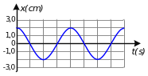
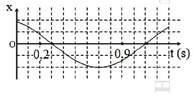

📋 Quy định làm bài
- Thời gian: 45 phút. Còn 10 phút hệ thống nhắc; hết giờ có thêm 5 phút gia hạn rồi tự động nộp.
- Bài làm ở chế độ toàn màn hình. Chuyển tab, mất focus, thoát toàn màn hình đều bị ghi nhận và báo cho giáo viên.
- Không dùng chuột phải, sao chép/dán, phím tắt. Trợ lý AI chỉ mở sau khi nộp bài. Phần tự luận: AI gợi ý điểm, giáo viên duyệt điểm chính thức.
PHẦN I. Câu trắc nghiệm nhiều phương án lựa chọn
Mỗi câu có 4 phương án, chỉ chọn một đáp án đúng (0,25 điểm).
1
Một con lắc lò xo gồm vật nhỏ có khối lượng $40\ g$ và lò xo nhẹ có độ cứng $16\ N/m$, dao động điều hòa với biên độ $8\ cm$. Khi đi qua vị trí cân bằng, tốc độ của vật là
2
Dao động của một chiếc xích đu trong không khí sau khi được kích thích là
3
Đối với một vật dao động điều hòa, khoảng thời gian để vật thực hiện một dao động toàn phần gọi là
4
Trong dao động điều hòa, vận tốc biến đổi điều hòa
5
Đồ thị li độ theo thời gian của dao động điều hòa là một
6
Một vật dao động điều hòa trên một đoạn thẳng dài $10\ cm$ với tần số $f=1\ Hz$. Tại thời điểm $t=0$, vật ở vị trí biên âm. Phương trình dao động của vật là
7
Một con lắc đơn có chiều dài $l$ dao động điều hòa tại nơi có gia tốc trọng trường $g$. Khi tăng chiều dài của con lắc đơn thêm một đoạn $3l$ thì chu kì dao động riêng của con lắc
8
Một vật dao động điều hòa trên trục Ox. Hình bên là đồ thị biểu diễn sự phụ thuộc của li độ x vào thời gian t. Biên độ dao động của vật bằng

9
Con lắc đơn chiều dài $l=1,44\ m$ dao động tại nơi có gia tốc trọng trường $g=\pi^{2}\ m/s^2$. Thời gian ngắn nhất để quả nặng con lắc đi từ biên đến vị trí cân bằng là
10
Điều kiện của sự cộng hưởng là
11
Một vật dao động điều hòa theo phương trình $x=A\cos(\omega t+\varphi)$. Vận tốc của vật được tính bằng công thức
12
Khi một vật dao động điều hòa, chuyển động của vật từ vị trí biên về vị trí cân bằng là chuyển động
13
Một vật nhỏ dao động điều hòa theo phương trình $x=A\cos(\omega t+\varphi)$ với $A>0;\ \omega>0$. Đại lượng $A$ được gọi là
14
Một con lắc lò xo có độ cứng $900\ N/m$ dao động với biên độ là $10\ cm$. Cơ năng của con lắc trong quá trình dao động có giá trị là
15
Một vật dao động tắt dần có các đại lượng nào sau đây giảm liên tục theo thời gian?
PHẦN II. Câu trắc nghiệm đúng sai
Trong mỗi ý a), b), c), d) chọn Đúng hoặc Sai. Đúng 1 ý: 0,1 · 2 ý: 0,25 · 3 ý: 0,5 · 4 ý: 1,0 điểm.
1
Một vật dao động điều hòa dọc theo trục Ox với phương trình vận tốc là $v=20\pi\cos(4\pi t+\pi)\ (cm/s)$.
a) Chiều dài quỹ đạo của vật là 10 cm.
b) Gia tốc cực đại của vật là $20\pi\ cm/s^2$.
c) Vật thực hiện 2 dao động toàn phần trong 1 s.
d) Lúc $t=0$, vật qua vị trí cân bằng O, cùng chiều dương.
2
Một con lắc lò xo gồm vật nặng 0,2 kg gắn vào đầu lò xo có độ cứng 20 N/m. Kéo quả nặng ra khỏi vị trí cân bằng rồi thả nhẹ cho nó dao động, tốc độ trung bình trong 1 chu kỳ là $\frac{160}{\pi}$ cm/s.
a) Cơ năng của vật dao động là: $W=64\ J$
b) Đổi đơn vị vận tốc: $v=\frac{160}{\pi}\ cm/s=\frac{1,6}{\pi}\ m/s$
c) Biên độ dao động: $A=0,8\ m$
d) Quãng đường đi được trong 1 chu kỳ là $4A$
3
Vật dao động điều hòa có đồ thị li độ phụ thuộc thời gian như hình bên.

a) Chiều dài quỹ đạo dao động là 2 cm
b) Tại $t=0,3$ s thì $x=2$ cm
c) Phương trình dao động có dạng là $x=2\cos(\omega t+\pi)$ cm
d) Vật thực hiện được 1 dao động sau 0,2 s
PHẦN III. Câu trắc nghiệm trả lời ngắn
Điền đáp số (có thể dùng dấu phẩy hoặc dấu chấm thập phân). Mỗi câu 0,25 điểm.
1
Một chất điểm dao động điều hòa có đồ thị biểu diễn sự phụ thuộc li độ x của chất điểm theo thời gian t như hình vẽ. Tại thời điểm $t=0,2$ s, chất điểm có li độ 2 cm. Ở thời điểm $t=0,9$ s, gia tốc của chất điểm có giá trị bằng bao nhiêu $m/s^2$? (Lấy sau dấu phẩy 2 chữ số)

m/s²
2
Một vật dao động điều hòa trong nửa chu kì đi được quãng đường 10 cm. Khi vật có li độ 3 cm thì có vận tốc $16\pi$ cm/s. Tần số dao động của vật là bao nhiêu Hz? Lấy $\pi^2=10$.
Hz
3
Một vật dao động điều hòa trên quỹ đạo dài 20 cm. Tại thời điểm $t_1=0,25$ s và $t_2=0,5$ s thì pha dao động của vật lần lượt là $\frac{\pi}{6}$ rad và $\frac{2\pi}{3}$ rad. Li độ của vật tại $t=0$ là bao nhiêu cm?
cm
4
Một vật dao động điều hòa với phương trình $x=6\cos\left(20t+\frac{\pi}{3}\right)$ cm. Tốc độ trung bình của vật trong khoảng thời gian $t=\frac{13\pi}{60}\ s$ kể từ khi bắt đầu dao động là bao nhiêu cm/s (làm tròn 1 số thập phân)?
cm/s
5
Một con lắc lò xo gồm lò xo nhẹ và vật nhỏ dao động điều hòa theo phương ngang với tần số góc 10 rad/s. Biết rằng khi động năng và thế năng (mốc ở vị trí cân bằng của vật) bằng nhau thì vận tốc của vật có độ lớn bằng $0,6\sqrt2$ m/s. Biên độ dao động của con lắc là bao nhiêu mét?
m
6
Một vật dao động theo phương trình $x=4\cos(\omega t+\phi)$ (cm). Tại $t=0$, vật đi qua vị trí có li độ $-1$ cm theo chiều âm của trục Ox. Giá trị của $\phi$ là bao nhiêu rad? (Lấy sau dấu phẩy 2 chữ số, làm tròn)
rad